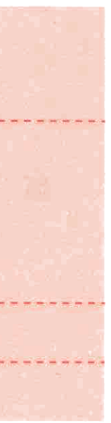
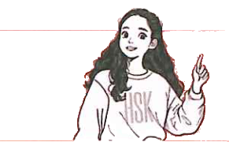

生词New WordsНовые слова
专有名词Proper NounsИмена собственные
分角色朗读对话。Role-play the dialogue.Прочитайте диалог по ролям.
两人一组，根据实际情况对话。Work in pairs and have a dialogue based on real-life situations.Работайте в парах и разыграйте диалог на основе реальных ситуаций.

1“是”字句“是” SentenceПредложение с “是”
表示人或事物等同什么或类属什么， 否定形式是“不是”。The “是” sentence is used to indicate what somebody or something equals or belongs to. The negative form is “不是”.Предложение с “是” используется, чтобы указать, чему кто-то или что-то равно или к чему принадлежит. Отрицательная форма — “不是”.
大声朗读。Read aloud.Читайте вслух.
(1) 我是法国人。
(2) 她是中文老师。
(3) 我老师不是法国人。
2结构助词“的”Structural Particle “的”Структурная частица “的”
结构助词“的”在定语和中心语之间， 表达领属关系。The structural particle “的” is placed between the attributive and the head noun/nominal phrase to express a possessive relationship.Структурная частица “的” ставится между определением и главным существительным/именной группой для выражения притяжательных отношений.
大声朗读。Read aloud.Читайте вслух.
(1) 白家月的中文老师
(2) 你的名字
如果“的”前边是人称代词， 后边是亲属称谓或指人的名词，“的”可省略。If the word “的” is preceded by a personal pronoun and followed by a kinship term or a noun referring to a person, “的” can be omitted.Если слову “的” предшествует личное местоимение, а за ним следует термин родства или существительное, обозначающее человека, “的” может быть опущено.
011